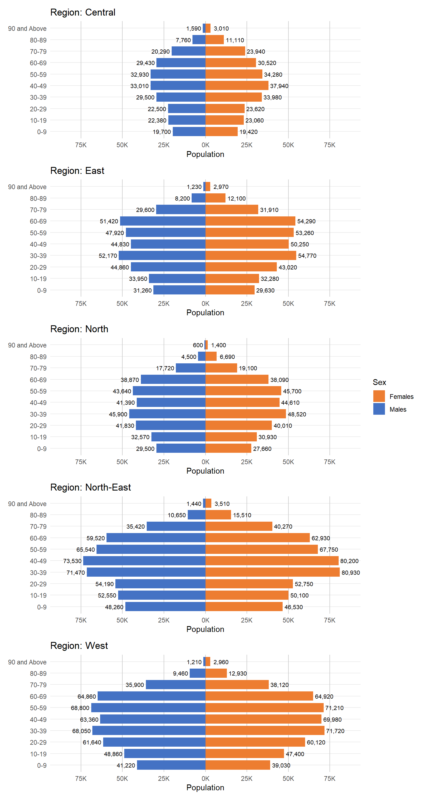

pacman::p_load(tidyverse, ggrepel,
ggthemes, hrbrthemes,
patchwork, ggiraph,
dplyr, forcats) Take-Home Exercise 1: Creating Data Visualisation that is enlightening and truthful
1. Overview
1.1 Setting the scene
A local online media company that publishes daily content on digital platforms is planning to release an article on demographic structures and distribution of Singapore in 2024
1.2 The Task
Assuming the role of the graphical editor of the media company, you are tasked to prepare at most three data visualisation for the article.
To accomplish the task, the data: Singapore Residents by Planning Area/Subzone, Single Year of Age and Sex, June 2024 dataset shared by Department of Statistics, Singapore(DOS) is used.
1.3 Breaking down the question
Demographic Structure refers to: Age distribution, Gender Ratio and Dependency Ratio (Elderly per working adult)
Demographic Distribution refers to: Planning Area or Subzone, Urban vs Suburban, Age or gender concentrations in specific areas
Based on these information, i plan to answer the following questions:
- What is the age distribution of Singapore’s population in 2024 and what is the proportion of working proportion
2. Getting Started
2.1 Load packages
We load the following packages using the pacman::p_load function:
tidyverse: Core collection of R packages designed for data science
ggrepel: An R package to provide geoms for gg plot2 to repel overlapping text labels
ggthemes: An R package to provided extra themes, geoms and scales for ggplot 2
hrbrthemes: an R packagae that provides typography-centric themes and theme componenets for ggplot2
patchwork: to prepare composite figure created using ggplot2
2.2 Import Data
The data that has been used has been mentioned in Chapter 1.2 above. We import this dataset as resident_data.
resident_data <- read_csv("respopagesex2024.csv")2.3 Data Wrangling
2.3.1 Check for duplicate entries
We first take a look at the data and check if there are any duplicate entries using any(duplicated()).
any(duplicated(resident_data))[1] FALSESince “FALSE” is returned, there are no duplicated entries
2.3.2 Check for missing values
The colSums function is being used to check for missing values.
colSums(is.na(resident_data)) PA SZ Age Sex Pop Time
0 0 0 0 0 0 Since there are no missing values in any of the rows, we will proceed with the next step.
2.3.3 Filtering for relevant variables & renaming them
There are 60424 rows x 6 columns in the data, where the columns are labelled as:
PA - Planning Area
SZ - Subzone
Age - From “0” to “89”, and those above 90 are labelled as “90_and_Over”
Sex - Males or Females
Pop - Resident Count (Has been rounded to the nearest 10)
Time - Year (We will only be looking at 2024 data)
Create a new object called resident_data_clean where we will rename PA, SZ and Pop for easy reading by using the rename() function.
Rename those labelled as “90_and_Over” in the Age Column as “90” using the ifelse() function for easier data plots.
Ensuring population and age is categorised as numerical data by using the as.numeric function.
For the Age column, it is slightly special as I used levels = as.character function as R sorts alphabetically by default and “10” will come before “2” instead. But by using this function, i am forcing R to treat the ages in true numeric order when i plot or tabulate them. A new column, Age_numeric, is also created in the new object.
resident_data_clean <- resident_data %>%
rename(
Planning_Area = PA,
Subzone = SZ,
Population = Pop
) %>%
# Convert Age to "90+" if it's "90_and_Over"
mutate(
Age = ifelse(Age == "90_and_Over", "90", Age),
Population = as.numeric(Population),
Age = factor(Age, levels = as.character(0:90)),
Age_numeric = as.numeric(as.character(Age))
)2.3.4 Preview processed data
head(resident_data_clean)# A tibble: 6 × 7
Planning_Area Subzone Age Sex Population Time Age_numeric
<chr> <chr> <fct> <chr> <dbl> <dbl> <dbl>
1 Ang Mo Kio Ang Mo Kio Town Centre 0 Males 10 2024 0
2 Ang Mo Kio Ang Mo Kio Town Centre 0 Femal… 10 2024 0
3 Ang Mo Kio Ang Mo Kio Town Centre 1 Males 10 2024 1
4 Ang Mo Kio Ang Mo Kio Town Centre 1 Femal… 10 2024 1
5 Ang Mo Kio Ang Mo Kio Town Centre 2 Males 10 2024 2
6 Ang Mo Kio Ang Mo Kio Town Centre 2 Femal… 10 2024 2Now that data wrangling is complete, we will proceed to share 3 key visualisations performed on this data set.
3 Data Visualisation
As there are too many planning areas, to make things easier to visualise, I categorised them into 5 areas: North, North-East, East, West and Central. This is done by using the categories on the Urban Redevelopment Authority(URA) website:
North: Central Water Catchment, Lim Chu Kang, Mandai, Sembawang, Simpang, Sungei Kadut, Woodlands, Yishun
North-East: Ang Mo Kio, Hougang, Punggol, Sengkang, Serangoon, Seletar
East: Bedok, Changi, Changi Bay, Pasir Ris, Paya Lebar, Tampines
West: Boon Lay, Bukit Batok, Bukit Panjang, Choa Chu Kang, Clementi, Jurong East, Jurong West, Pioneer, Tengah, Tuas, Western Water Cachement
Central: Bishan, Bukit Merah, Bukit Timah, Central Area, Downtown Core, Marina East, Marina South, Museum, Newton, Novena, Orchard, Outram, River Valley, Rochor, Singapore River, Straits View, Tanglin
Areas like North-Eastern Islands and Western islands are intentionally left out as they do not belong to any of the areas
3.1 Age-Sex Pyramid
Steps:
Step 1: I first created a new list called region_map to categorise them into the 5 categories
# 1. Step 1
region_map <- list(
North = c(
"Central Water Catchment", "Lim Chu Kang", "Mandai",
"Sembawang", "Simpang", "Sungei Kadut", "Woodlands", "Yishun"
),
`North-East` = c(
"Ang Mo Kio", "Hougang", "Punggol", "Sengkang",
"Serangoon", "Seletar"
),
East = c(
"Bedok", "Changi", "Changi Bay",
"Pasir Ris", "Paya Lebar", "Tampines"
),
West = c(
"Boon Lay", "Bukit Batok", "Bukit Panjang", "Choa Chu Kang",
"Clementi", "Jurong East", "Jurong West", "Pioneer",
"Tengah", "Tuas", "Western Water Catchment"
),
Central = c(
"Bishan", "Bukit Merah", "Bukit Timah", "Central Area",
"Downtown Core", "Marina East", "Marina South", "Museum",
"Newton", "Novena", "Orchard", "Outram", "River Valley",
"Rochor", "Singapore River", "Straits View", "Tanglin"
)
)Step 2: A new data object resident_regioned was then created with their region matched to them and those who are not found are removed using filter() function.
# Step 2
resident_regioned <- resident_data_clean %>%
mutate(
Region = case_when(
Planning_Area %in% region_map$North ~ "North",
Planning_Area %in% region_map$`North-East` ~ "North-East",
Planning_Area %in% region_map$East ~ "East",
Planning_Area %in% region_map$West ~ "West",
Planning_Area %in% region_map$Central ~ "Central",
TRUE ~ NA_character_
)
) %>%
filter(!is.na(Region))Step 3: The data was then mutated using cut() and breaks() function to split them into Age categories: “0-9”, “10-19” and so on. In the cut() function, “right = FALSE” was used to exclude the upper bound of the bins so that they will consider 0-9 instead of 0-10 for each bin. A new column Age_bin was created.
# 3. Step 3
resident_regioned <- resident_regioned %>%
mutate(
Age_bin = cut(
Age_numeric,
breaks = c(seq(0, 90, by = 10), Inf),
labels = c(paste0(seq(0,80,by=10), "-", seq(9,89,by=10)), "90 and Above"),
right = FALSE
)
)Step 4: A new data object pyramid_data was created to create the pyramid table. groupby() and summarise() functions were used to group them by region, age group and sex, before summing them up.
ifelse() was then used to flip males to negative values so they will be plotted to the left.
tooltip() is used for each bar so that it displays age group and population
# 4
pyramid_data <- resident_regioned %>%
group_by(Region, Age_bin, Sex) %>%
summarise(Total = sum(Population), .groups = "drop") %>%
mutate(
Value = ifelse(Sex == "Males", -Total, Total),
tooltip = paste0("Age: ", Age_bin,
"\nPopulation: ", Total)
)Step 5: Create interactive plot
pyramid_plot <- ggplot(pyramid_data, aes(x = Value, y = Age_bin, fill = Sex)) +
geom_col_interactive(aes(tooltip = tooltip), width = 0.8) +
facet_wrap(~ Region, ncol = 2) +
scale_x_continuous(labels = abs, breaks = scales::pretty_breaks(n = 5)) +
scale_fill_manual(values = c(Males = "#4472C4", Females = "#ED7D31")) +
labs(
title = "Interactive Age–Sex Pyramids by Region (June 2024)",
x = "Population",
y = "Age Group"
) +
theme_ipsum_rc(base_size = 12) +
theme(
legend.position = "bottom",
strip.text = element_text(face = "bold"),
axis.title.y = element_blank(),
panel.grid.major.y = element_blank()
)# 6. Step 6
girafe(
ggobj = pyramid_plot,
width_svg = 10, height_svg = 15,
options = list(
opts_tooltip(css = "background: #f0f0f0; padding: 5px; border-radius: 4px;")
)
)3.2 Pie Chart to Visualise Total Population by Gender
# Define the correct stacking order for pie slices
ordered_levels <- rev(c(
"Central.Males", "Central.Females",
"East.Males", "East.Females",
"North.Males", "North.Females",
"North-East.Males", "North-East.Females",
"West.Males", "West.Females"
))
# Prepare the data
pie_all_regions <- resident_regioned %>%
mutate(
RegionSex = factor(paste(Region, Sex, sep = "."), levels = ordered_levels),
label = paste0(round(Population / sum(Population) * 100, 1), "%")
)
# Plot: simple, clean pie with percentages inside
ggplot(pie_all_regions, aes(x = "", y = Population, fill = RegionSex)) +
geom_col(width = 1, color = "white") +
geom_text(
aes(label = label),
position = position_stack(vjust = 0.5),
size = 3,
color = "black"
) +
coord_polar(theta = "y") +
theme_void() +
labs(
title = "Population Composition by Region and Gender (2024)",
fill = "Region & Sex"
) +
scale_fill_manual(
values = c(
"Central.Males" = "#f4cccc",
"Central.Females" = "#a94442",
"East.Males" = "#d9ead3",
"East.Females" = "#6aa84f",
"North.Males" = "#fce5cd",
"North.Females" = "#e69138",
"North-East.Males" = "#d9d2e9",
"North-East.Females"= "#8e7cc3",
"West.Males" = "#cfe2f3",
"West.Females" = "#3c78d8"
),
breaks = rev(ordered_levels)
)